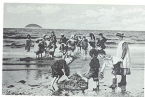

| 
|
Standing
on the deserted blustery beach, we are accompanied by squadrons
of ghost children in Edwardian costumes splashing and racing
and gathering sea-shells, and elegant ladies bathing in long-leggèd
costumes. Look, Leah, there’s Ailsa Craig, and
behind it, Ireland, can you see? We’re not far.
|
|
Now,
there are some folk who say that Ailsa was
dropped there by the same witches who were chasing Tam
O’Shanter.
They didn’t
get Tam, only poor Meg’s tail, when she was leaping
over the burn to safety (because witches can't cross running
water, you know). Some say the devil sent
them on to Ireland next,
stealing
off
with some of Scotland’s treasure, but one of the
witches let go of her skirts and the precious stone she was
carrying
landed
in the sea and became our Ailsa Craig. Ach, but that's
not the real story of how Ailsa Craig came to be
Paddy’s
milestone (now it marks the distance to Scotland for
Irish fisherman, you see?).
Long
long ago, before our time, before the time of Tam O’ Shanter,
Finn MacCuill was the leader of the Fianna, the King of Ireland’s
warriors, and the defender of Ulster. He was a magical man
and a good man; a giant, no one was better at poetry
or
wisdom
than Finn.
One of his rivals was Benandonner, a Scottish giant who lived
just across the sea, here in Ayrshire.
Benandonner couldn’t
swim across the sea to Ireland for a proper giant’s
battle, so Finn tore pieces of rock from Volcanoes into columns
to
make the
causeway
to Scotland...the Giant's Causeway. Benandonner
came across the causeway to Ireland to Finn's house, but
Finn had dressed up as a baby to confuse him. My goodness!
thought
Benandonner,
if the baby is this big, how big must his father be? Suddenly,
the baby Finn bit the Scottish giant's hand off and Benandonner
took
off for Scotland, in a great stramash. When he saw that
Benandonner was running away, Finn decided to give him something
else
for
good measure.
He picked
up wads of Irish earth and started throwing them after
poor auld Benandonner. The largest hole that he left behind,
that's
Lough Neagh (that big lake in the North of
Ireland) and one large clump of dirt he threw became the
Isle of Man. But the last rock that Finn threw fell short:
it landed in the sea near Girvan, and that’s
Ailsa Craig that you’re looking at now.
One summer, I spent hours writing poems in the flat sand left behind
by the tide, convinced by Gran that the waves would carry my writing
to children on Irish beaches.
|